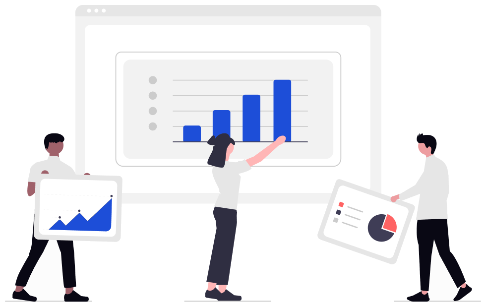

Action View 2.0
Umfassendes Redesign und Relaunch des zentralen Analyse-Features der Plattform, das Media- und Publishing-Kunden Live-Daten zur Google-SERP-Sichtbarkeit liefert.

Das Trisolute News Dashboard ist ein Echtzeit-Tool für die Google-News-Sichtbarkeit von News-Publishern. Es überwacht Desktop- und Mobile-SERPs sowie Google News nahezu in Echtzeit: Die nachrichtenrelevanten Ranking-Typen werden alle 15 Minuten geprüft. Action View ist der redaktionelle Arbeitsbereich: Es zeigt, wo und in welchen Ranking-Typen die eigenen Artikel ranken, macht Ranking-Potenzial und Missing Topics sichtbar und übersetzt SERP-Daten in konkrete nächste Schritte für die Redaktion.
- ProduktTrisolute News Dashboard (Trisolute Software GmbH)
- TypTool für Google-(News-)SERP-Sichtbarkeit und Analytics von News-Publishern
- FunktionEchtzeitnahes Ranking-Monitoring über News Box, Karussells, Live Blog und Organic, plus Ranking-Potenzial und Missing Topics
Ein geschäftskritisches Tool mit schlechter Experience
Der bestehende Action View war eines der geschäftskritischsten Features der Plattform, ließ die Nutzer aber im Stich. Die Oberfläche war überladen und die darunterliegende Datenstruktur extrem unübersichtlich, ohne klare logische Hierarchie, die Nutzer durch die benötigten Informationen führt.
Doch das visuelle Chaos war nur ein Teil des Problems. Selbst Nutzer, die sich durch die Oberfläche kämpften, blieben allein: Die Daten waren da, aber es gab keine Hilfestellung, was damit zu tun war. Nutzer sahen Zahlen, konnten aber nicht erkennen, was diese Zahlen für den nächsten Schritt bedeuteten. Das Produkt zeigte Informationen, ohne beim Handeln zu helfen.
Das Kernproblem waren nicht die Daten, sondern dass Nutzer nicht erkennen konnten, was ihnen die Daten sagen wollten oder was als Nächstes zu tun war.
Mehr als ein Redesign: Intelligenz ins Produkt bringen
Ich habe das Problem vollständig verantwortet und das Projekt von der ersten Discovery bis zum Go-to-Market gesteuert. Der Scope ging über das Interface hinaus. Ein zentraler Teil der Arbeit war, kontextuelle Handlungsempfehlungen direkt ins Produkt zu integrieren: Nutzer bekommen klare, datenbasierte Hinweise auf ihren nächsten Schritt, basierend auf den SERP-Daten.
Statt direkt Lösungen zu bauen, habe ich zuerst genau verstanden, warum Nutzer scheiterten und wo sie nach dem Laden der Daten hängen blieben.
Discovery & Research
Analyse von Verhaltensdaten zur Identifikation von Drop-off-Mustern, danach gezielte Kundeninterviews, um konkrete Pain Points und unerfüllte Bedürfnisse im bestehenden Flow zu erfassen.
Konzept, Design & neue Features
Übersetzung der Research-Ergebnisse in klare Ziele und validierte Konzepte. Design einer aufgeräumteren Oberfläche in Figma sowie einer neuen Ebene kontextueller Handlungsempfehlungen, die Nutzern direkt im Produkt Hinweise zum nächsten Schritt geben. Damit wurde das Tool von einer passiven Datenanzeige zu einem aktiven Entscheidungs-Tool.
Agile Umsetzung
Steuerung eines crossfunktionalen Teams aus Engineering und QA über agile Sprint-Zyklen, mit enger Feedbackschleife und schnellem Auflösen von Abhängigkeiten.
Go-to-Market
Orchestrierung eines Multi-Channel-Rollouts mit Marketing-Kampagnen, Nutzer-Newslettern und In-Product-Onboarding zur Steigerung der Adoption des neu gestalteten Features.
Messbare Ergebnisse, sofort und nachhaltig
Die Ergebnisse waren sofort spürbar und hielten an. Durch die Behebung der zentralen Usability-Probleme und die ergänzenden kontextuellen Handlungsempfehlungen entwickelte sich das Produkt von einer Frustquelle zu einem echten Entscheidungs-Tool. Nutzer verstanden die Oberfläche nicht nur besser, sie wussten auch, was sie damit tun sollten.
Die verbesserte Experience wirkte über das Feature hinaus. Ein besseres Kern-Tool bedeutete, dass Nutzer mehr Zeit auf der Plattform verbrachten, mehr Wert entdeckten und eine höhere Gesamtzufriedenheit meldeten. Das Redesign wurde zu einem zentralen Referenzpunkt in Vertriebsgesprächen mit Enterprise-Interessenten.